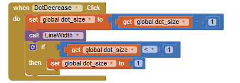
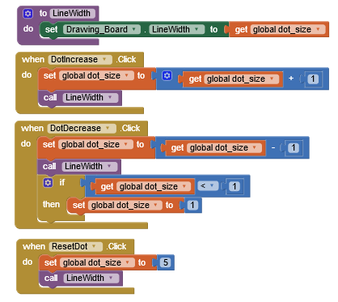
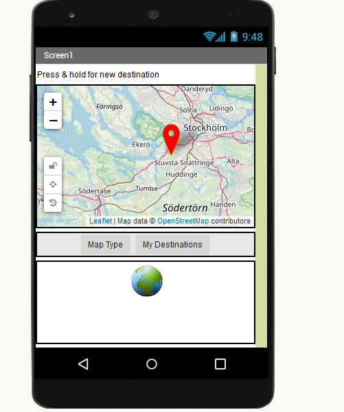
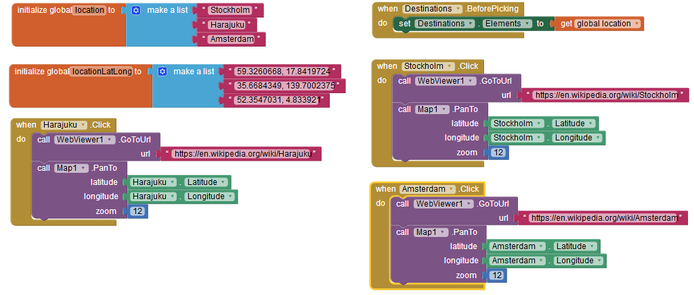
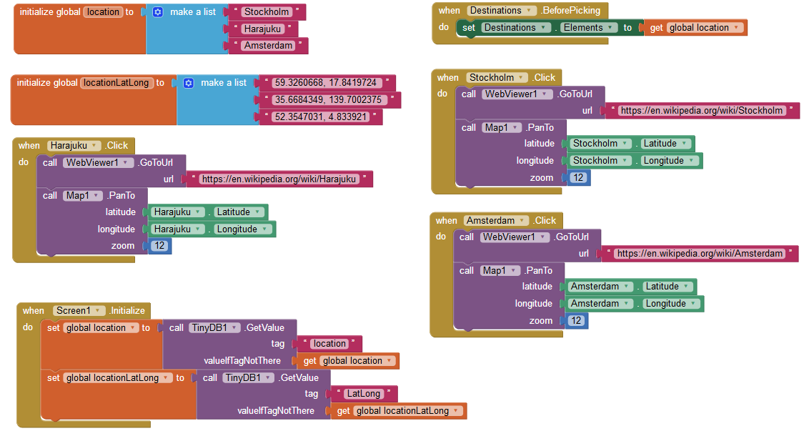

Q1:Explain the meaning of the statements shown here, both in AP CSP pseudocode and App Inventor. For example, suppose the variable X has the value 10 before the statement is executed.
What value would it have after the statement is executed.
X ← X + 1
A1:When it states "Set X to X + 1" it means to take the global x variable and then add one into it. After the event occurs or is executed then the answer will be 11 since the global x variable was 10, 10 + 1 = 11
Q2:One aspect of abstraction is that it helps to reduce details to focus on what's relevant. How does the use of a variable, such as dotsize, instead of a value, such as '5', help to reduce detail and focus on what is essential in this program.
A2:If it was '5', then it would become a constant and this will not allow any change. Now if the use of a variable such as dotsize was used, then there can be changes because it is not a constant, we can make the variable differ such as increasing or decreasing dotsizes by 1.
Q1:Decode this message by converting it from binary to ASCII: 1000001 1110000 1110000 0100000 1001001 1101110 1110110 1100101 1101110 1110100 1101111 1110010 0100000 1010010 1001111 1000011 1001011 1010011 0100001 You can use this chart to help you: ASCII Conversion Chart
A1:APP INVENTOR ROCKS!
Q2:Describe what it means to say that JPEG is a lossy compression technique and whether or not it affects the quality of camera pictures.
A2:JPEG is a lossy compression technique because it loses information in the image during compression and it cannot be recovered. It does not really affect the quality of camera pictures since the loss of data cannot really be seen, but data is still being loss and compressed in the end.
Q3:Give a specific example of a binary sequence that can represent more than one type of data -- e.g., a number, a color, a character -- and describe how to interpret its different values.
A3:A binary sequence of 01001110 can represent multiple things such as the decimal number of 78, the character N, or the color black. It can be interpreted on how it is used, such as in an image, a text message or file, or just a sequence of number or decimals. Depending on how it is used, the answer will vary.
Q1:For enhancement #5 (the "If Block Exercise") give a brief description of your solution to this problem. PROVIDE A SCREENSHOT OF YOUR APP'S CODE -- the revised blocks -- and describe how the if/else block works to solve the problem in this case. If appropriate, include a description of any significant problems or bugs you encountered in solving this problem.
A1:

This was the code I had used as my solution to this problem. The if/else block works by checking if the variable dot size is less than one, if it is then the code will
make the dot size set itself back to one. It will not allow the user to go below one for dot size.
Q2:When you use the Camera component to take a picture as the Canvas background, explain why the picture goes away when the app is restarted. HINT: Think about the different hardware components we talked about in an earlier lesson and where on the device the picture is stored. What do you think could be done to prevent the picture from disappearing when the app is restarted?
A2:The picture goes away when the app is restarted because it is saved in the local RAM memory and not into the hard drive or storage of the device. To prevent the image from disappearing when the app is restarted, we can save the image to the storage of the device. If it was a computer, we can save it to the desktop and since it is now part of the computer's storage, anyone can see the image even after it restarted.
Q1:The Wikipedia article on refactoring talks about code smell and one motivation for engaging in refactoring. What is code smell? Describe briefly two examples of "code smell" and how refactoring would eliminate them.
A1:Code smell is extra and unnecessary code that might be repeated or causes difficulties when reading the code. Benefits of refactoring are making the code easier to read, easier to fix bugs, and many more. Some examples of "code smell" is from my app, Bob Ross 2.0, it had three lines of repeated codes to call line width with the variable, dot size, and it made the code look really messy and ugly. I refactored the code with a procedure, now the code looks simpler with one function instead of three or four together then repeated three times since there are three buttons that needs to call it. Another example having multiple texts and sentences, when it can easily be listed. When listed, it will be easier to read and understand and it will be more organized.
Q2:Insert a screenshot of the procedure from your app below.
A2:

Q1:(POGIL) Describe an algorithm for identifying the card that was flipped.
A1:
Face up card = 1 Face down card = 0 Column: Count the amount of 1s if the amount of 1s are odd Add 1 to the end of the column Else, the amount of 1s will be even Add a 0 to the end of the column Row: Count the amount of 1s If the amount of 1s are odd Add 1 to the end of the row Else, the amount of 1s will be even Add a 0 to the end of the row Card Flipped: Count amount of 1s in first row If amount of 1s are even Move onto next row Then, the flipped card is in the row Else, move onto columns Count amount of 1s in the columns If number of 1s are equal Move onto next column Then, the flipped card is in the column
Q2:(POGIL) The card "trick" shows that it is always possible to identify the card that was flipped as long as only one card was flipped. Would it be possible always to determine if an error occurred if two cards were flipped?
A2:Sometimes it will be possible to determine if two cards were flipped, but not always. If the two flipped cards weren’t in the same row or column, then it is sometimes possible, but if it was in the same row or column, then it would cancel each other out. This would form a parity bit that is even since it canceled each other out which would ruin the indicator, the odd parity bits, to figure out if it was flipped or not.
Q1:Explain how the error card trick from the Error Detection lesson uses a parity scheme. Was it an even or odd parity scheme?
A1:The error card trick lesson used a parity scheme because there was a card added to each end of the row and column, the cards represented the number of bits, even or odd. The error card trick lesson used an even parity scheme because the number of face up cards in both rows and columns were even.
Q2:What are some of the limitations of using parity bits for error detection?
A2:Some limitations of using parity bits for error detection are how if there is an even number of bit errors, then it might not be able to find the problem. The even number of errors can cancel each other out and the parity bits will think there are no errors. Another limitation is when there is an error, to correct it you need to add more bits and this will make everything more complex.
Q3:Another type of error detection is a check sum. Research what a check sum is and then describe it in your own words. Can a check sum identify where an error occurs?
A3:A check sum is another type of error detection and it checks for the correct number of bits. The check sum can identify if an error had occuered since the values will be different, but it can not tell where the error occurred.
Q4:(Optional) Explain in your own words the difference between error detection and error correction. Describe how the error correction process used in the video above allows the computer to fix errors.
A4:Error detection is the process of finding the error in the code while error correction is fixing the error of the code. In the video, three parity bits were added to the end of the bytes and when there is an error, it will be found at the location in between the two bits.
Q1:How are lists used in this app? Why is a list a useful data abstraction or an abstract data type (ADT) in programming? Is it easy to add new destinations to the tour?
A1:Lists are used in this app to put down the locations of the markers. The lists can also be used to put the coordinates of the locations too. A list is a useful data abstraction in programming because it allows users and the app owner to put in as many unique things they would like. It is easy to add new destinations to the tour because all you need is to select a place, get the coordinates, and name it, this would create a new tag/marker of where the location is.
Q2:How do APIs simplify complex programming tasks? Pick an app that you use on your device (e.g. Twitter, Google Maps) and see whether it provides an API and some of the functions you can control with it. Describe your results below.
A2:APIs simply complex programming tasks since it allows two different programs with information to be shared with each other and communicate to each other, allowing it to do different actions. An app on my device that provides an API is Google Maps since you can go to different locations, click on the markers of it and see reviews or the pictures of the place. You can do many different actions from being guided to looking at reviews of the location all in one app.
Q3:How is GPS used in this app? Do some research to find out how GPS works and describe it here in a couple sentences.
A3:GPS is used in this app by showing the location of the markers on the map and to locate where different landmarks or places are. A GPS works with 30+ global satellites around Earth and it will constantly send signals. With your phone, it will receive these signals and calculate its distance from four or more GPS satellites, with this it can figure out where you are.
Q4:Insert screenshots of the enhancements that you made below and describe how they work.
A4:
 
The enhancements I had made were adding destinations to the map tour and how there is a Wikipedia page about the locations when the marker has been clicked on. When a marker or location is clicked on, the map
will zoom in at a level of 12 and then a Wikipedia page at the bottom will appear. The Wikipedia page will be about the location and you can read some facts and information of the location's history.
Q1:What does it mean to say that data is 'persistent'?
A1:When data is 'persistent' it means the data/information will not be deleted when you exit the app.
Q2:What's the difference, in terms of where data is located, for data stored in a global variable vs. data stored in a database?
A3:The data in a global variable is stored in the RAM and will be gone when you exit the app. The data in a database is stored into the local storage of the device and will be saved.
Q3:Include screenshots and explanations of your enhancements.
A3:

This is my code and the enhancements I did on my app was how when the marker is clicked, it will zoom in at a level of 12 and how a Wikipedia page will appear on the screen with information to read about the
location. Another enhancement I had done was how when the app is loaded, the screen will call the Tiny DB about the value on the locations and coordinates of the markers I have on the app, but if there is no
tag then it will get global location or the global locationLatLong (coordinates of the markers).
Q1:What is metadata? Give an example of how a piece of metadata could be used to increase the usefulness of an image or document.
A1:Metadata - a set of data that describes and gives information about other data. A piece of metadata could be used to give more information of a doc or an image such as when it was maybe edited or created, what it is about, and it can also be useful to label images or documents.
Q2:What is a model?
A2:A model is a representation of a photo or image in bits.
Q3:What's the difference between a raster image and an ASCII representation of a text document?
A3:A raster image are pixels and ASCII are the code for alphabets and symbols.
Q4:What are filename extensions? What are they used for?
A4:Filename extensions are the endings of the file names with a dot and three letters. They are used to identify the file type and how the content will be viewed.
Q5:What is lossless representation? What is lossy representation? What are the trade-offs in using each representation?
A5:Lossless representation is when the image is exactly the same as the rendered or original image. Lossy representation is when an image is a similar representation of the original or rendered image, but it loses quality and a bit of data in the image and the human eye can not really see the difference. The trade offs of these two are lossless is higher quality but a bigger file size, while lossy will lose some quality, but it isn't very visible and the size of the file size will be smaller.
Q6:What is steganography and what is it used for? Describe in your own words the steganography algorithm used in the activity.
A6:Steganography - the art and science of hiding information by embedding messages within others, seemingly harmless messages. It is used to send a secret message with other data in it. The algorithm used in the activity was adjusting each bit and hiding the message within it. It will then be uploaded into a decoder to reveal the hidden message within it.
Q7:What would you have to do to delete a document from your computer so that it could not possibly be read by anyone else?
A7:You can use software to destroy all data or the file, or use the USB Kill, a usb killer that literally destroys your computer. These are a few ways that can make documents basically unreadable.
Q8:What is free and open source software? Provide an example.
A8:A free and open source software is Firefox and Google Chrome. Both are browsers that lets you surf the web and basically do anything, with no cost or anything.
Q9:How has retouching become a controversial issue? Give an example.
A9:Retouching is a controversial issue because it ruins the originality and gives a fake view of what the real image or file was.For example, models with retouching on their bodies and giving a fake image or documents being edited to change responses, that is fake.
Q10:Would you rather own a camera (or camera phone) with a higher number of megapixels or lower? Explain.
A10:I would own a camera with a higher number of megapixels because it will give better quality of the image. More pixels = higher quality!
Q11:Other than digital images, what might be an example of a computer model? Explain your answer based on the definition of a model.
A11:An example of a computer model would be a video since it is basically just images and pictures being put together into a nice and smooth motion. It is a model since it is representing photos and images just through bits, and then blended in fluidly.
Q12:The code that implements App Inventor is open source and its impact on education is obvious. Find another example of open source software and describe its positive impact on education, business or society.
A12:Another open source software is GIMP. GIMP is an alternative Photoshop-like app and is free. It allows anyone to draw, paste, edit, and do anything with images. It gives creativity to kids, adults, businesses, and to others. It is free and allows people to express their creativity.